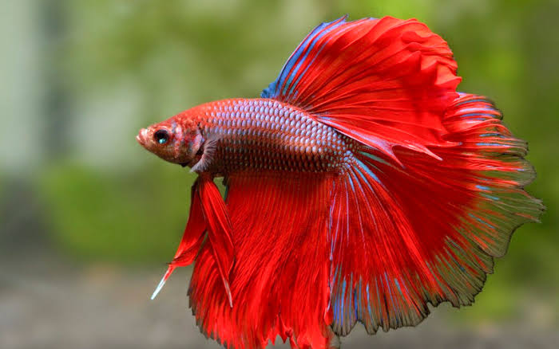
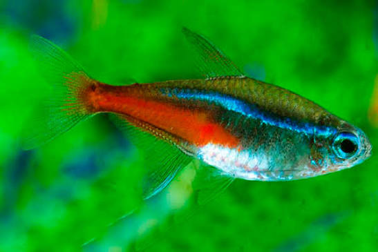
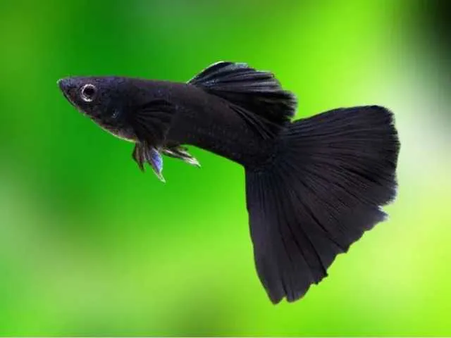

Betta

O betta é conhecido pela beleza e pelo comportamento territorial. Os machos devem viver sozinhos, pois brigam entre si. Ele respira ar da superfície, então o aquário precisa de uma tampa com folga para o ar.
Um guia simples para quem quer montar o primeiro aquário.
Estas espécies são comuns em lojas, de fácil manutenção e ótimas para quem está começando na aquariofilia.

O betta é conhecido pela beleza e pelo comportamento territorial. Os machos devem viver sozinhos, pois brigam entre si. Ele respira ar da superfície, então o aquário precisa de uma tampa com folga para o ar.

O neon é um peixe pacífico que se sente seguro em grupo. O ideal é manter pelo menos seis indivíduos juntos. A faixa azul brilhante chama atenção, principalmente em aquários com plantas e luz suave.

O guppy é resistente, aceita bem vários tipos de ração e se reproduz com facilidade. Os machos são mais coloridos e menores, e as fêmeas são maiores e mais discretas. Se não houver controle, a população cresce muito rápido.
| Espécie | Tamanho adulto | Temperatura ideal | Aquário mínimo | Convivência |
|---|---|---|---|---|
| Betta | 6 a 7 cm | 24 a 28 °C | 20 L | Macho solitário |
| Neon | 3 a 4 cm | 22 a 26 °C | 40 L | Cardume de 6 ou mais |
| Guppy | 3 a 6 cm | 22 a 28 °C | 20 L | Pacífico, em grupo |
Tem uma dúvida ou uma sugestão para o guia? Preencha o formulário abaixo. Os campos com asterisco (*) são obrigatórios.